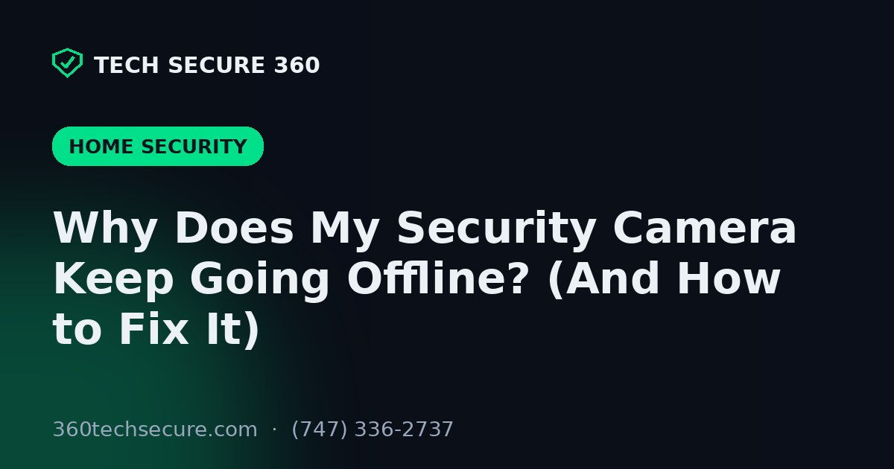

A security camera only helps if it is actually recording. So few things are as frustrating as opening your app to check something and seeing that dreaded "camera offline" message - often right when you needed the footage. It is one of the most common calls we get from LA homeowners, and it spikes every summer when the heat starts stressing equipment. Here is why cameras drop offline, and how to sort out each cause.
This one question narrows things down fast. If a single camera keeps dropping while the others stay up, the problem is usually that camera, its cable, or its WiFi signal. If every camera goes offline at once, look upstream - your recorder, your router, or your power. Sort this out first and you have already cut the list of suspects in half.
For wireless cameras, a shaky signal is the usual culprit. Distance, thick stucco or brick walls, and metal all eat into range - and an outdoor camera at the far corner of the property is often right at the edge of what the router can reach. A mesh point or a dedicated access point near the camera usually fixes it. If your cameras are constantly fighting the WiFi, it may be worth reading our take on wired vs. wireless cameras - a hardwired run removes the signal problem entirely.
Cameras reboot or drop when power is inconsistent: a loose PoE connection, a failing power adapter, a tripped GFCI outlet, or a brief outage. If a camera drops at the same time every day, a timer or shared circuit may be cutting it. And if the whole system dies during grid interruptions, that is a separate (fixable) issue we cover in keeping cameras recording during a power outage.
Cameras have operating-temperature limits, and a cheap unit baking in direct afternoon sun can overheat and reboot itself to protect its electronics. If a camera only drops on the hottest part of hot days, heat is the likely cause. Repositioning it into shade, adding a small sun shroud, or upgrading to a camera rated for higher temperatures usually solves it. Our guide on how LA sun, heat, and coastal air affect cameras goes deeper on choosing gear that survives our summers.
On wired systems, the physical connection is often the weak point: water intrusion in an outdoor connector, a cable chewed by rodents, a loose RJ45, or a failing port on the PoE switch or recorder. These cause intermittent drops that are maddening to chase without the right tester - which is where a quick service visit saves hours.
Sometimes it is software: outdated firmware, two devices fighting over the same IP address, or an older recorder that is simply maxed out on bandwidth from too many high-resolution cameras. Updating firmware, assigning fixed addresses, and matching the recorder to your camera load clears these up.
Still dropping after all that? That is exactly the kind of thing we fix. We track down intermittent offline cameras across Greater Los Angeles - WiFi, power, heat, or cabling - and get your system recording reliably again. Free estimates, and we can often diagnose it fast.

Both have real trade-offs. Here's a plain-English breakdown to help you pick.

When the power goes out, does your system keep recording? Here's how LA cameras behave in an outage.

LA's sun, heat, and salt air quietly wreck cheap cameras. Here's how to choose ones that last.
Tell us about your place and we'll respond within one business day with a tailored plan and pricing. Or call us right now.
Your request is in. A Tech Secure 360 specialist will reach out within one business day. Need help now? Call (747) 336-2737.